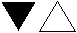
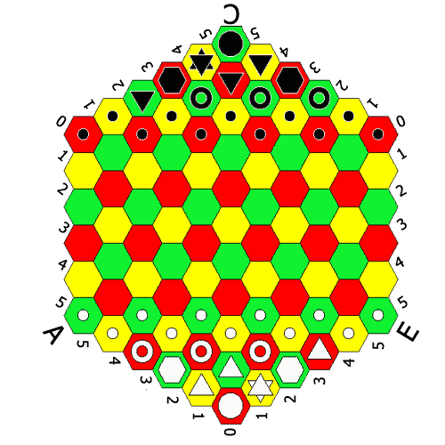
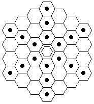
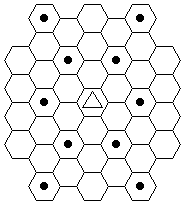
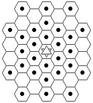
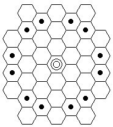
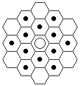
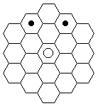

|
Valeriy
Trubitsyn - HEXOFEN (Hexagonal Chess)
Lord
Baskerville is considered to be the author of the first hexagonal chess
version, which dates back to 1929. The game was played on a square board
with 83 hexes. The game was far from being perfect, but Vladislav Glinsky
considered the invention of this new game an untimely action.
V.Glinski's
doubtless merit is his complete refusal from dogmatic interpretation of
the great game of chess. His project was courageous and interesting,
containing some flaws though. He partly updated it later, making the
design more attractive, but an absence of independent competent critics
had a negative effect on the final results. And the fact, that the game
was hastily "canonized" by the British doesn't mean anything. That
action was untimely- not the first publication of lord Baskervil, as
search of the best variation of a new chess game was far from being
completed.
Russian
geologist Isaak Shafran was trying to create hexagonal chess
approximately at the same time with V. Glinski. We do not know, if he was
familiar with V.Glinski's first patent. Anyway, 10 years later I. Shafran
received the copyright certificate for a very similar game (see
copyright. ¹ 106.997 from 24.04.56 ). It seems that I.Shafran,
trying to avoid copying V.Glinskis's patent, was compelled to select a
less suitable irregular-shaped board, because it is not the rules of a
game that are patented, but layouts only. In I.Shafran's game the rules
were more important than layouts: unlike V.Glinski he used an absolutely
correct hexagonal one-sided pawn, which parameters strictly corresponded
to the orthodox chess system for all structures. At that time in Great
Britain 2 federations of Hexagonal chess were organized:
BHCF - British Hexagonal Chess Federation - 1976
IHCF - International Hexagonal Chess Federation -
1980
And still
both of the aforementioned variations of the game contain some flaws
which for some reason are persistently ignored in publications in Russia
(see "The Science and Life " ¹ ¹ 3 for 1979 "
Bases of the theory of Hexagonal Chess ", by V.P. Volkov, Kalinin,
Kalininski oblsovet VDFSO trade unions, 1989, page108 ). The first
publication on the game by I.Shafran was edited in the same magazine
issue " The Science and Life ", the title was far from being
perfect: it is known there are no "sides" in hexagonal chess.
V. Glinski
version is flawed in the following ways:
- the use of pawn
with free parameters which moves and attacks like a rook (!) on
orthogonal directions
- the initial ratio of the figures in the game is lowered
(0,39 instead of 0,45)
- the number of “light” figures -bishops and knights- is not the
same in a players’ set
- the king's flanks are located opposite to each other, which results in
a so-called “mirror reflection” position
- an exotic initial position of chessmen is chosen to the detriment of a
free board space;(it has returned the chess to the epoch of medieval
times (the parallelism of pawn fronts is broken as well))
- the chess notation doesn’t suit the new structure of the board
because of its fixed central symmetry
I.Shafrans’s version is flawed in the following
ways:
- the board of an
irregular extended shape is used (due to a wrong assumption that the
shape of the board, not the structure, increases the pieces’ dynamics)
- the initial ratio of the number of figures to the number of squares is
increased (0,51 instead of 0,45)
- pawns fronts are not parallel
- the number of light figures – bishops and knights- is not the same
- the pawns are located so that the distance to the points of their
transformation into other pieces is not the same (the difference is up to
4 moves)
- the chess notation is archaic and doesn’t suit the new board structure,
it can be read only from one side of the board (like in Glinski’s
version)
Americans
joined the intellectual competition in this area only in 1975 when D.
Jenkins got a patent for his version of the game for two and three
players. He used a larger board to avoid any similarity with Glinski’s
version, which significantly reduced the initial ràtio of the
total number of pieces to the number of squares.
According
to the aforementioned St. Petersburg can have its say in reaching the
agreement on the final official version of the game. The first article on
hexagonal chess by Valery Trubicyn was published in the newspaper
“Igrok”(September issue (“Player”)) in St.Petersburg in 1997. All the
flaws of the previous versions of the game were eliminated. The main
parameters of Hexofen are described below:
The present
chess game for two players is played on the board designed by V. Glinski,
that is a three color hex-shaped board with 91 cells. Each of the players
has the following set of figures: king, queen, 2 rooks, 3 bishops, 3
knights, 11 pawns. The number of all figures on the board is 42. Thus,
the initial ratio of the total number of pieces to the number of squares
is: 42 : 91 = 0,46 (0,39 in Glinski’s version).
To make
easier the drawing of the multiple chess diagrams, the author of the new
version of the game offers new universal symbols for chessmen based on
the basic geometrical figures:
Queen
King

Bishop
Knight
Rook
Pawn

Pic. 1.
It is
obvious that the traditional chess notation is not suitable for hexagonal
chess play boards. This is why the author considered it necessary to
introduce his universal notation system for hexagonal chess “ACEK” which
suits many types of games with large board size. This system is centrally
symmetrical and uses only 3 letters of Latin alphabet and 6 digits, which
are available on any keyboard. The traditional chess notation uses 8
digits and 8 letters. But, what is more important, ACEK notation can be
read from any side of the board, this is very important in multi players
chess games, which we will describe later. There are some other
advantages as well.
The
structure of ÀÑÅÊ - see pic.1.
First we
should imagine the board divided into three diamond–shaped sections
marked by the three letters A, C, E. Then we put the letters and digits
along the perimeter of the board. The digits mark the “zero” line of
cells located at the sections’ junction. When reading the coordinate
first comes the letter marking the section, then – the left digit from
the letter and then the right digit. For example, the three corner cells
of the board will be marked as follows: à55, ñ55,
å55. Now we can mark the positions of all figures.
White: King-å05, Queen-å15,
Rook-à52, Rook-å25, Bishop-à51, Bishop-å04,
Bishop-å35, Knight-à53, Knight-à41, Knight-å14,
pawns: à55, à54, à43, à42, à31,
å03, å13, å24, å34, å45, å55.
Black: King-ñ55, Queen-ñ54,
Rook-ñ35, Rook-ñ53, Bishop-ñ45, Bishop-ñ44,
Bishop-ñ52, Knight-ñ25, Knight-ñ34,
Knight-ñ43, pawns: ñ05, ñ15, ñ14, ñ24,
ñ23, ñ33, ñ32, ñ42, ñ41, ñ51,
à05.
Three
“zero” lines of cells proceeding from the central cell of the board can
be marked with coordinates of either left or right section, but to make
the marking system a fixed one it is recommend to refer the zero line
cells to the right section and to mark the central cell as a00. It
becomes clear then why the black pawn on the far left side was marked as
co5, and not as e50.
The problem
of pawns location was solved by V. Glinsky. To put all the pawns on the
same distance from the points of their transformation into other figures,
he located all pawns on the same distance from the corner side of the
board. We chose another method. The pawn may be transformed into any
piece in case it will reach the final rank (beyond the opponent’s pawns)
by means of 5-6 moves. That is the row where the most important pieces
are located. This line is marked as follows: white pieces: à53,
à41, å14, å35. black pieces: ñ25, ñ34,
ñ43, ñ52.
The rule
that the number of knights and bishops must be the same is caused by the
fact that if this rule is not kept there’ll be too many unchanged bishops
by the end of the game. The hunt for knights will reduce their number
even more during one game.
Not being
familiar with general chess laws V. Glinski repeated the traditional
opposition of kings’ flanks in the initial position. The most advanced
chess players of the third millennium consider this a mistake. (If you
try to locate the kings in the game with odd number of players, you will
see that they can be placed either on the right or on the left spiral and
this is true for all games with any number of players. A game for two is
just a special case from the general rule: we have to choose either right
or left chess world. So, what did we choose?) By the way, I. Shafran
understood it very soon.
The moves
of the chessmen are shown on the pic.2 - 5.
The rook
and the bishop are the basic pieces in all orthodox chess systems, the
rest of the chessmen are derivative figures.
The rook
moves and attacks on the orthogonal directions of the board. The rook can
only move on the cells of different colors in any direction. If starting
from a cell that is not on the far side, it can move along the six lines
of the three directions (pic 2.)






The bishop moves on the 6 lines of the three diagonal
directions on the cells of the same color. In hexagonal structure these
cells of the same color are not adjacent to each other, that’s why the
bishop is so penetrative and his way looks like the dotted line. The
bishop’s moves look very colorful and bright. (pic. 3.)
The queen is a geometrical combination of two basic
figures. It moves and attacks on 12 lines of both directions. (pic.4)
The king is a mini-queen, it can move one cell at a
time. (pic.5)
The knight moves and attacks on the points unreachable for
the queen (and not like letter "z", as grand masters and chess
experts use to say). (pic.6)
The pawn is the derivative piece from king. The super
pawn has a circle radius of action with different directions for move and
for capture. It is used in a multiplayer game. In the games for two
players it’s better to use a pawn with a limited area of action (it is
used quite often). In hexagonal chess for two players, like in a
traditional game, the pawn moves only forward on orthogonal direction and
attacks on two adjacent diagonal directions. (It’s strange why V. Glinsky
was confused by that). All the peculiarities of traditional pawn moves
and captures are preserved, including its transformation into other
pieces (pic.7)
Castling in hexagonal chess is not needed because of the
unusual board shape and high figures dynamics. This is why that rule was
abolished. Thus we easily got rid of the most ridiculous rule of the
traditional chess.
It takes
time, of course, to get used to the new game of hexagonal chess, but even
the beginning players will evaluate the game highly very soon. Not only
the power and penetration ability of the figures have increased – the
pace of the game and the combinations character have changed as well. And
what is the most important: finally a new multilevel and flexible
structure was introduced into the game of chess, new ways and levels of
thinking, which can be compared only to the man’s step into the outer
space. The only thing left is to come to consensus about the final
officially adopted version of this wonderful game. But it’s not that easy
at all! The supporters of V. Glinski’s flawed version have already made
some fortune on it and pretend to be deaf and mute not answering the
questions concerning the flaws of the game. And indeed- so much was done
already: books published and awards given and so on…. So what is left to
do for those who oversees the future perspective? We seek the solution in
the Internet. And let the millions of chess fans themselves distinguish
between advertised dilettantism and the highest harmony. And let them
surpass us in the games of the third millennium.
|